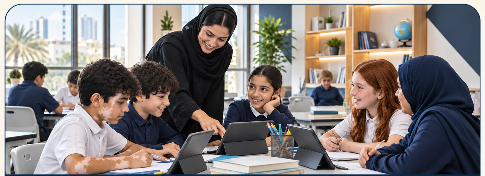
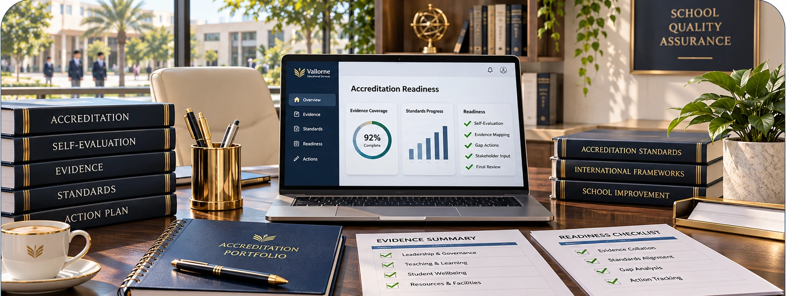
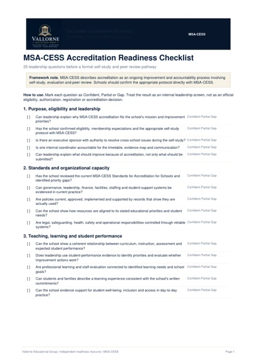
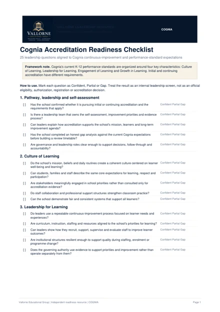
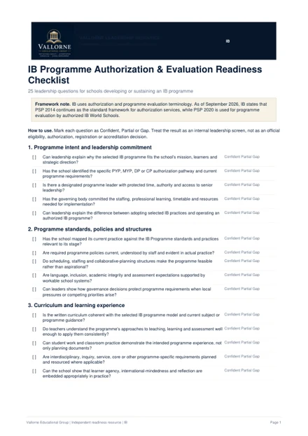
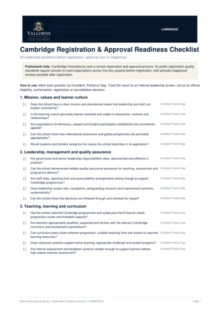

المدارس الخاصة والدولية
أنظمة جودة مصممة وفق واقع تشغيل مجموعات المدارس في الخليج وبيئات التعليم الدولي.
دعم عملي للجودة المؤسسية والجاهزية للاعتماد والمناهج والتحسين المدرسي، ينطلق من سياق مدرستك وأدلتها وأولوياتها.
نبدأ بالمشكلة التي تحتاج القيادة إلى حلها، ثم نبني نطاق العمل حول الأدلة والأنظمة والدعم المتخصص.
التقييم الذاتي وأنظمة الأدلة ومراجعة السياسة مقابل التطبيق.
تشخيص خاص بكل إطار، ودعم الدراسة الذاتية والاستعداد للمراجعة الخارجية.
المواءمة والتسلسل والتقويم وتأسيس البرامج التعليمية.
الأولويات والمسؤوليات ومؤشرات الأداء ودعم التنفيذ.
قوة المدرسة لا تُقاس بالوثائق وحدها. نختبر وجود النظام، وتطبيقه فعلياً، وقدرة المدرسة على إثبات أنه يعمل.
هل يوجد نظام مكتوب واضح ومناسب؟
هل يطبقه المسؤولون بصورة متسقة؟
هل توجد أدلة موثوقة تثبت أن النظام يعمل ويُراقب؟
تنجح أقوى الأطر الدولية عندما تُترجم إلى واقع المدرسة الفعلي في القيادة والكوادر والمناهج والمتطلبات التنظيمية.

أنظمة جودة مصممة وفق واقع تشغيل مجموعات المدارس في الخليج وبيئات التعليم الدولي.
مراجعة المناهج والأدلة مع مراعاة الصلة المحلية والحساسية المؤسسية.

دعم المدارس التي تحمل اعتماداً قائماً وتدرس إضافة مسار جودة أو اعتماد آخر.
تركّز المخرجات التنفيذية على القرارات والمسؤوليات والمخاطر والأدلة والخطوات التالية، لا على لغة الاستشارات المعقدة.
لا تحتاج كل المدارس إلى المستوى نفسه من الدعم. يمكن أن تبدأ فالورن بتشخيص مركز، أو مراجعة محددة، أو إدارة الاستعداد للاعتماد، أو البقاء إلى جانب القيادة ضمن شراكة جودة أطول مدى.
مراجعة مركزة لنقطة البداية تحدد الأدلة والمخاطر والأولويات والخطوة المناسبة التالية.
مراجعة واضحة النطاق للجودة المؤسسية أو المناهج أو العمليات أو التمويل أو أعباء العمل أو أولوية أخرى متفق عليها.
دعم منظم عبر دورة الجاهزية: إغلاق الفجوات، وتيسير الدراسة الذاتية، وحوكمة الأدلة، واستعداد الموظفين والمراجعة.
دعم متجدد لمدة 12-36 شهراً للمدارس التي ترغب في استدامة الجودة واتساق المناهج وحوكمة التحسين بعد مراجعة أو اعتماد واحد.
نبدأ بحوار قيادي، ونحدد نقطة البداية بتشخيص عند الحاجة، ثم نتفق على نطاق واضح ومسؤولين ومراحل تنفيذ محددة.
أربع أدوات مستقلة من فالورن، صُممت وفق مصطلحات كل إطار ومنطق الأدلة الخاص به.

الدراسة الذاتية والقدرة المؤسسية وخطة التحسين والاستعداد لمراجعة الأقران.
تحميل القائمة
ثقافة التعلم والقيادة ومشاركة المتعلمين والنمو وأدلة التحسين المستمر.
تحميل القائمة
هدف البرنامج وهياكل التنفيذ والتطوير المهني والاستعداد للترخيص أو التقييم.
تحميل القائمة
معايير جودة التسجيل وتنفيذ المنهج والضوابط التشغيلية والاستعداد لزيارة الموافقة.
تحميل القائمةموارد مستقلة من فالورن ولا تعني ضمان الاعتماد أو الترخيص أو التسجيل. تبقى المتطلبات والقرارات الرسمية لدى الجهة المعنية.
الأسئلة العملية التي تطرحها المدارس عادة قبل أن تقرر ما إذا كان المشروع الاستشاري مناسباً لها.
لا. فالورن جهة استشارية مستقلة، وتبقى قرارات الاعتماد الرسمية لدى جهة الاعتماد المختصة.
يمكن لفالورن تنظيم العملية وتيسيرها وضبط جودتها والمساعدة في الصياغة استناداً إلى أدلة المدرسة الحقيقية، لكن يجب أن تظل الأدلة والقرارات والتنفيذ ملكاً للمؤسسة. هذه الملكية أساسية لعملية موثوقة.
نعم. يمكن أن تكون أنظمة الجودة القائمة أصلاً نقطة قوة. تحدد فالورن ما يمكن مواءمته أو الاحتفاظ به أو تعزيزه بدلاً من التخلص من عمل مؤسسي جيد.
تعتمد المدة على نقطة بداية المدرسة ودورة جهة الاعتماد. وتحدد فالورن مدة الدعم وفق فترة الجاهزية الفعلية بدلاً من فرض مدة موحدة.
ليس بالضرورة. تعمل فالورن من خلال القيادة والموظفين الموجودين باستخدام مسارات عمل ومسؤوليات ومواعيد وضوابط أدلة واضحة بدلاً من إنشاء بيروقراطية ثانية.
عادةً نبدأ بحوار قيادي يتبعه، عند الحاجة، تشخيص مركز. فهم نقطة البداية الحقيقية قبل اقتراح مشروع كبير يحمي المدرسة والعلاقة الاستشارية.
لا. تضيف فالورن الهيكل والقدرة التخصصية والمنظور المستقل، بينما تبقى قيادة المدرسة مسؤولة عن القرارات المؤسسية والتنفيذ.
نعم. تتيح شراكة الجودة المؤسسية دعماً متجدداً لمدة 12-36 شهراً للقيادات التي ترغب في استدامة روتين التحسين وأنظمة الأدلة واتساق المناهج والجودة المؤسسية.
نعم. تعمل فالورن في بيئات المدارس الدولية مع احترام خصوصية كل إطار، وتراجع المعايير الفعلية وبنية البرنامج والتنفيذ بدلاً من تطبيق نموذج منهجي واحد على الجميع. الإشارة إلى الأطر لا تعني وجود ارتباط رسمي بالجهات المالكة لها.
نعم. تُدرس الأطر الدولية إلى جانب المتطلبات الوطنية والتنظيمية والسياق المحلي وأولويات المؤسسة.
نعم. يمكن تحديد النطاق لمرحلة رياض الأطفال أو الابتدائية أو المتوسطة أو الثانوية أو برنامج محدد، أو توسيعه إلى مراجعة شاملة للمدرسة حسب الحاجة.
نعم. يمكن لفالورن دعم بنية المنهج، ومواءمة المعايير والتدرج، واتساق التقويم، وتخطيط الكوادر والتطوير المهني، ومراجعة التنفيذ وضمان جودة البرنامج وفق سياق المدرسة والمنهج المختار.
نعم. يمكن لفالورن دعم تصميم البرنامج عبر المراحل، وتسلسل المنهج، وبنية التقويم، والكوادر وتنسيق المعلمين، وخطة التنفيذ وضمان الجودة المستمر وفق احتياجات المدرسة.
تحدد المراجعة النتائج والأولويات والتوصيات ضمن نطاق واضح. أما المشروع المُدار فيستمر مع المدرسة خلال التنفيذ وتطوير الأدلة وروتين الجاهزية والمراحل المتفق عليها.
يُحدد نطاق المشروع وفق حجم المؤسسة وبنية البرامج ونقطة البداية ومستوى الدعم المطلوب، ثم يقدم نطاق واضح وعرض استثمار قبل بدء العمل.
نعم. يمكن تكليف هذه الخدمات كمسارات محددة أو دمجها في مراجعة مؤسسية أشمل عندما ترتبط بأولويات المدرسة الاستراتيجية.
شاركنا أولوياتك لنساعدك على تحديد نقطة البداية ومستوى الدعم المناسب.